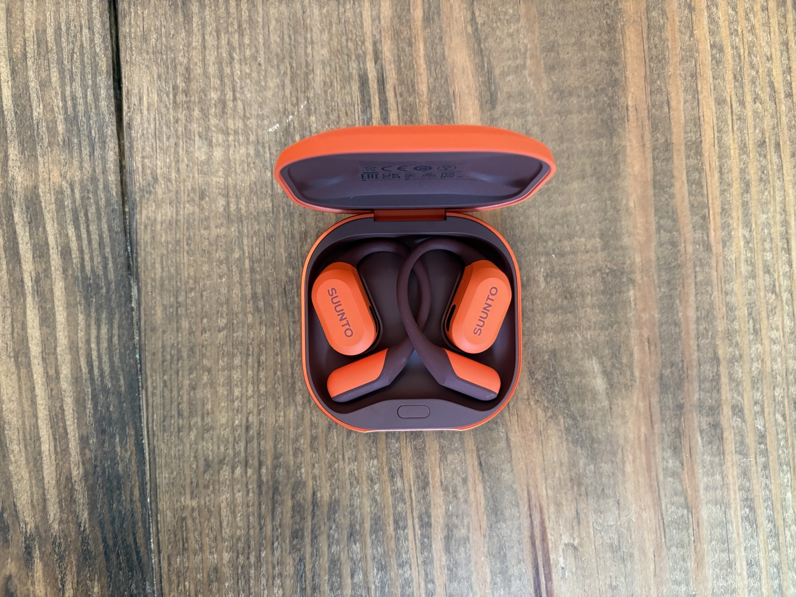
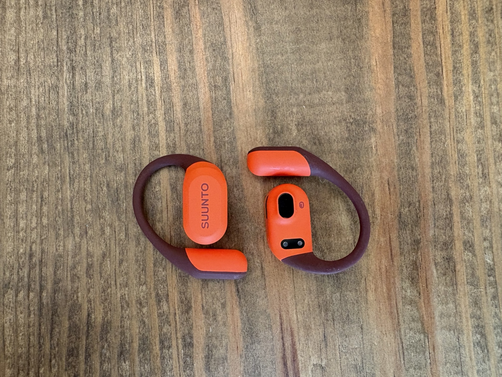

Suunto Spark Review
Open-ear wireless headphones built for runners who want crisp audio without losing awareness of their surroundings.
Back to GearWhen most runners hear the name Suunto, they probably think of GPS watches, not headphones. But the Suunto Spark is proof that Suunto is serious about building a complete ecosystem for runners.
As I've gotten older, I've found myself reaching for music or podcasts more often during my runs. The problem is that I never want to sacrifice being aware of my surroundings. Whether it's a car coming up behind me, a cyclist calling out, or another runner passing by, staying aware is non-negotiable.
The Suunto Spark is designed to solve that problem with an open-ear design that lets you enjoy your audio while still hearing the world around you. After logging plenty of miles with them, here's what I think.

The Good
The Suunto Spark absolutely nails what I want from a pair of running headphones.
First, they're incredibly comfortable. They sit securely on my ears without creating pressure points, and after a few minutes I honestly forget I'm wearing them. Even on longer runs they stayed in place and never became distracting.
The biggest win, though, is the open-ear design. I can listen to music or a podcast while still hearing traffic, cyclists, and other runners around me. For someone who spends a lot of time running on roads and multi-use trails, that's a huge safety benefit.
I also appreciate that Suunto ditched the connected headband found on some of its previous headphones. I owned that version, and the band constantly bumped into the back of my hat, which drove me crazy. The Spark's completely cordless design solves that issue and makes them feel much more natural while running.
The audio quality also impressed me. Music sounds crisp, podcasts are easy to hear, and I never felt like I was sacrificing sound quality just because I wanted to keep my ears open.

The Bad
There are really only two complaints I have.
First, don't expect these to be your go-to headset for taking phone calls while running. I could hear the other person perfectly, but they had a difficult time hearing me because the microphone picked up the wind much more than it picked up my voice.
The second is battery life. At around 6–7 hours, I've honestly never had an issue. Every run I've done has ended with battery to spare, so for daily training they're more than enough. That said, I don't think these were designed with ultramarathon runners in mind. If you're heading out for a 100K, 100-miler, or an all-day adventure, you'll likely need to recharge them somewhere along the way.
The Verdict
At $180, the Suunto Spark definitely isn't cheap, and I won't pretend it is. There are plenty of wireless headphones available for less money.
That said, I think you're paying for a running-specific experience that simply works. They fit comfortably, stay secure, never interfere with my hat, deliver crisp, clear audio, and let me hear everything happening around me. For me, that's exactly what I want from a pair of running headphones.
If you're looking for headphones to wear at the office or take conference calls all day, there are probably better options. But if your priority is getting a pair of wireless headphones that disappear once your run starts, let you enjoy your music, and keep you aware of your surroundings, the Suunto Spark absolutely delivers.
For me, that's a win—and it's worth the $180 price tag.
Disclosure
Disclosure: This product was provided by the manufacturer for review. As always, they had no input into our testing, opinions, or final verdict.